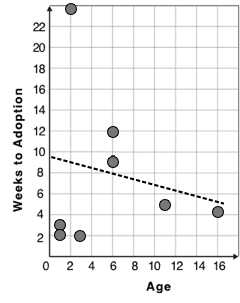

|
 |
{kind=link}
1 Choose an animal from the table on the left, and plot their age/weeks values by adding a dot to the scatter plot on the right (be sure to check your axes!). Then write their name next to your dot. Plot the rest of the animals - one at a time. After each one, ask yourself whether or not you see a pattern in the data. After how many animals did you begin to see a pattern?
Use a straight edge to draw a line on the graph that best represents the pattern you see, then circle the cloud of points around that line.
2 Are the points tightly clustered around the line or loosely scattered? loosely scattered
3 Does this display support the claim that younger animals get adopted faster? Why or why not?
4 Place points on the graph to create a scatter plot with NO relationship. |
students should add random points to their scatter plot, in no particular pattern |
These materials were developed partly through support of the National Science Foundation,
(awards 1042210, 1535276, 1648684, and 1738598).  Bootstrap by the Bootstrap Community is licensed under a Creative Commons 4.0 Unported License. This license does not grant permission to run training or professional development. Offering training or professional development with materials substantially derived from Bootstrap must be approved in writing by a Bootstrap Director. Permissions beyond the scope of this license, such as to run training, may be available by contacting contact@BootstrapWorld.org.
Bootstrap by the Bootstrap Community is licensed under a Creative Commons 4.0 Unported License. This license does not grant permission to run training or professional development. Offering training or professional development with materials substantially derived from Bootstrap must be approved in writing by a Bootstrap Director. Permissions beyond the scope of this license, such as to run training, may be available by contacting contact@BootstrapWorld.org.